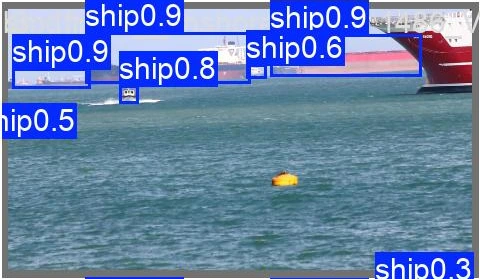
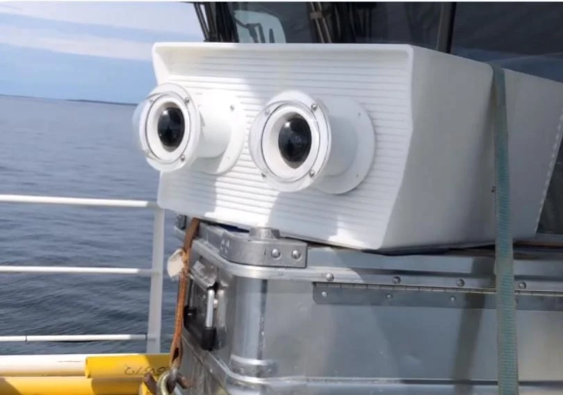

The scene keeps changing.
Glare, darkness, waves, and camera movement change what an optical system can see. The sensing setup has to fit those conditions.
Intelligence across air and sea
Visual sensing and onboard intelligence for defense,
maritime awareness, and critical infrastructure.
The problem
A small object on the water. A brief surfacing. A point moving against a shifting background. Useful observations can be easy to miss.
Glare, darkness, waves, and camera movement change what an optical system can see. The sensing setup has to fit those conditions.
Researchers and operators need to find relevant objects in long recordings, then inspect enough surrounding footage to understand them.
A detection becomes useful when someone can review the object, its movement, and the scene around it.
01 / About the technology
SENSE → PROCESS → UNDERSTANDCapture the scene. Run the model. Review the observation.
SEAQR brings optical field hardware, onboard processing, and computer vision into one development workflow. Our vessel and whale models identify objects in recorded imagery; our small-target research follows image points across frames.

Optical field systems today. A modular architecture in development for visual, infrared, and acoustic sensing.
Onboard compute brings analysis closer to the source, with development on NVIDIA Jetson hardware.
Object-detection models and motion-aware tracking turn image sequences into observations operators can review.
02 / The work, in motion
RECORDED DETECTION EXAMPLESSelected sequences from our model evaluations and tracking research. Original model outputs, ready to explore.
Recorded visual detection around a buoy in open water. Watch the original demonstration from our field presentation.
Two whales surface and dive, with the original model predictions visible throughout the sequence.
Original imagery beside recorded tracking output: a closer look at how the system follows a small moving image point.
Selected examples illustrate model behavior; they are not an aggregate accuracy benchmark.
Explore the detection library03 / Use cases
START WITH THE OBSERVATION YOU NEEDFor crews, researchers, and site operators, the useful question is the same: what do we need to notice, and what will we do with that information?

Vessel model / validation stillFor maritime operators
Review vessels and surface objects around a route or approach. Our ship and buoy examples provide a starting point for evaluating collision and hazard awareness.
Explore vessel awarenessFor research teams
Locate candidate marine mammal sightings in recorded imagery, then inspect the original sequence. Selected whale detections show the observation workflow.
Explore biological trackingDefine a controlled evaluation for people in the water.
Camera & sensor selectionChoose imaging channels around the conditions.
ResearchStudy observations alongside the conditions that produced them.
Ports & approachesReview vessels, buoys, and activity around an area of interest.
Key benefits
The value is in how an observation helps your team work. We scope the equipment and evaluation around that job.
Review model output with its source imagery. Inspect the surrounding scene and follow the sequence rather than relying on an isolated label.
Start with mounting, lighting, target size, and observation distance. Those requirements guide camera, lens, and processing choices.
Agree on representative footage, missed detections, false positives, and operator needs before deciding how to expand a deployment.
04 / The hardware
REAL HARDWARE. REAL ENVIRONMENTS.
Maritime field installation / SEAQRCameras are part of the system
A field system needs more than a camera. Mounting, enclosure, compute, and supporting sensors all shape the recording. Explore our optical nodes, our ZWO and Boson camera options, and the next generation of modular hardware.
Optical sensing & onboard compute
Detection, motion & temporal tracking
Exploring integrated visual, infrared, and acoustic sensing for a broader picture of the environment.
 Explore platform options
Explore platform options 05 / Company
SEAQR brings together computer vision, software, and hardware engineering to develop sensing systems grounded in field experience.
From our maritime roots to new infrastructure applications, we’re working toward a shared goal: helping people understand what is happening around the places that matter.
Meet SEAQRBuild a clearer picture
A maritime deployment, an infrastructure pilot, or a research collaboration. Let’s start with your environment.